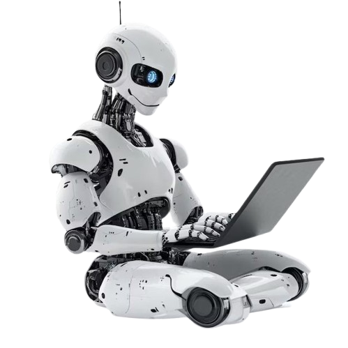

Nombre: JHON JAIRO DURÁN FERNANDEZ
Tercer Año: Telematica
¿Qué es la Robótica?
La robótica combina ingeniería, informática e inteligencia artificial para crear máquinas que ayudan a los humanos en diferentes tareas, desde la industria hasta la medicina.
Aplicaciones en el Mundo Real
Salud
Robots quirúrgicos como Da Vinci permiten operaciones más precisas y menos invasivas.
Industria
Brazos robóticos automatizan procesos de producción en fábricas alrededor del mundo.
Exploración
Rovers como Perseverance están explorando Marte, enviando datos a la Tierra.
Educación
Los kits de robótica enseñan a niños y jóvenes a programar desde temprana edad.
Proyectos Destacados
Aquí tienes algunos ejemplos de robótica que están marcando el futuro:
- Robot Atlas de Boston Dynamics: ágil y humanoide.
- Sophia: robot con expresión facial y conversaciones naturales.
- Robots sociales como Pepper en atención al cliente.
Contacto
¿Tienes preguntas sobre el mundo de la robótica? ¡Escríbenos!
Enviar correo